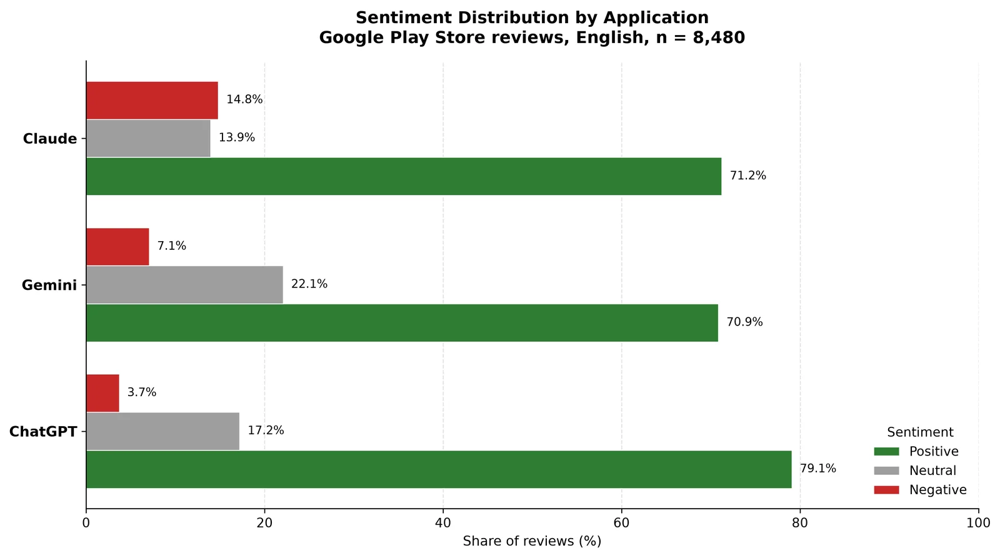
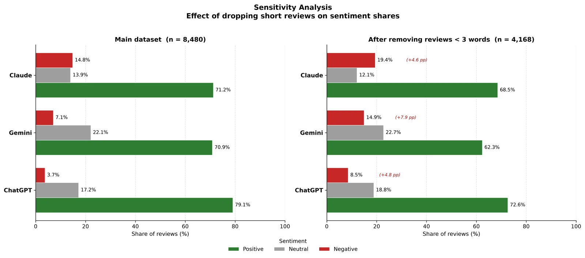
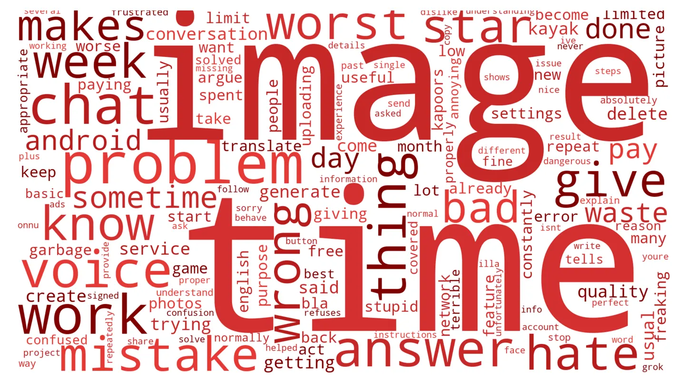
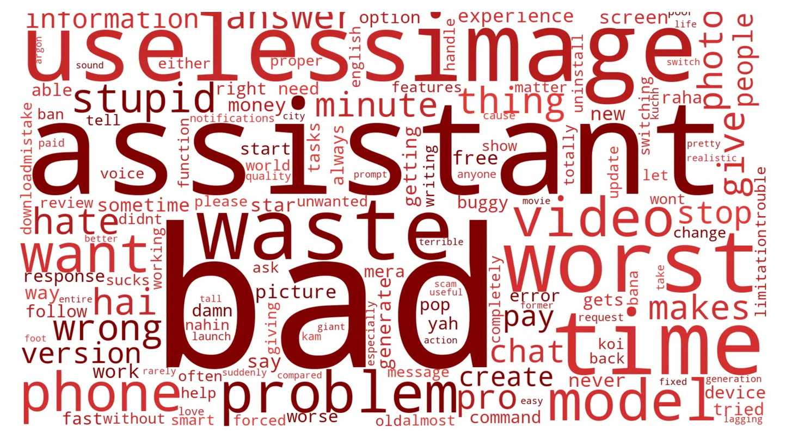
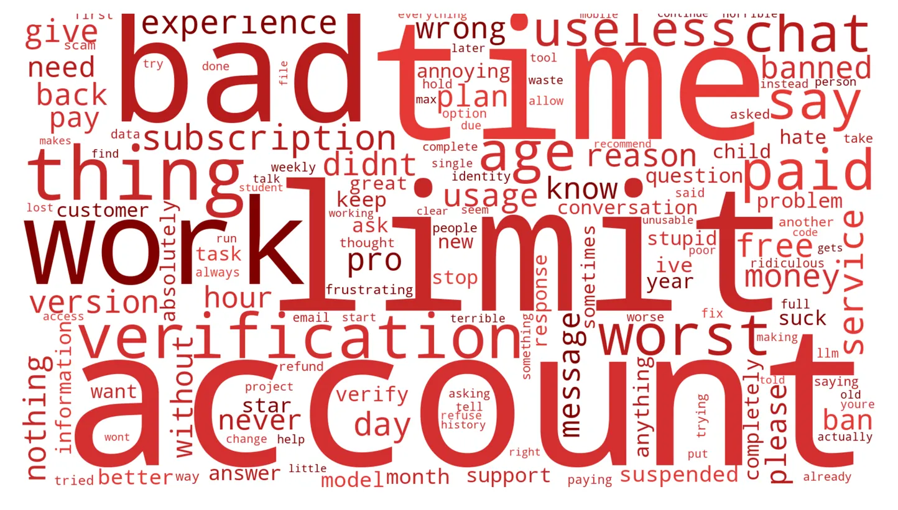
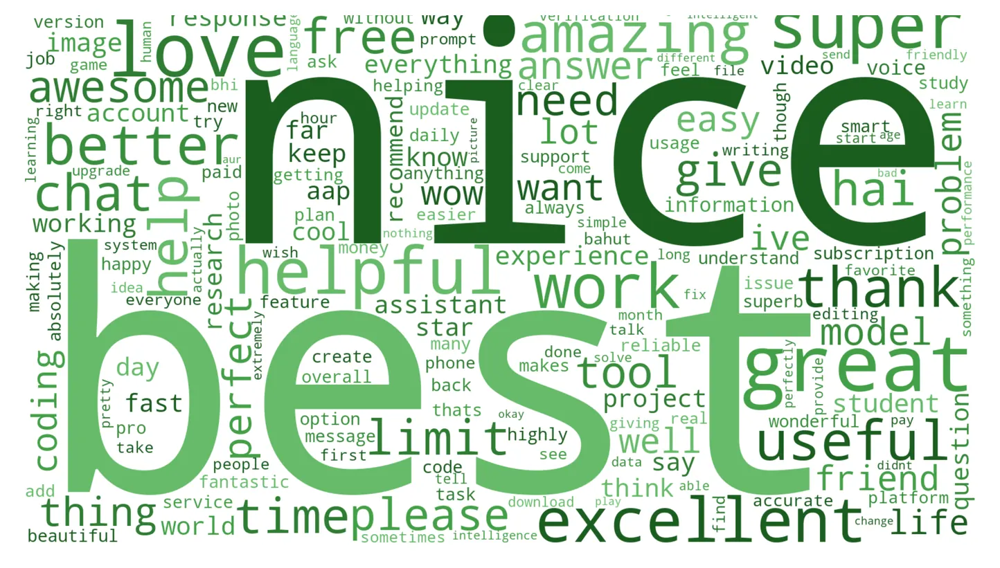

Sentiment Analysis · Google Play Store
ChatGPT vs Gemini vs Claude: what 8,480 reviews really say
I collected the most recent English reviews of the three leading AI assistants, cleaned them into an analysis-ready dataset, and scored every review with VADER. The question was not simply which app is rated higher, but what each user base is actually complaining about — and whether the star ratings agree with what people actually wrote.
Why sentiment analysis? A star rating tells you how many people are unhappy, but not why. Reading the reviews turns thousands of free-text opinions into comparable numbers, so each app’s complaints can be counted, ranked and explained.
- 8,480 Reviews analysed
- 79.1% ChatGPT positive
- 14.8% Claude negative
- 4× Claude vs ChatGPT: more likely to be negative
Highest satisfaction, fewest complaints
79.1% of reviews are positive and only 3.7% negative — four times fewer than Claude. Praise is emotional rather than functional, and the rare complaints target wrong answers, slow responses and image generation.
Polarised by access, not quality
Claude carries the largest negative share (14.8%). Its reviews are dominated by account, limit, verification and paid: users dispute the paywall and account controls, not the answers themselves.
Indifferent more than unhappy
Gemini holds the highest neutral share (22.1%) and the weakest positive consensus (70.9%). Its negative reviews lean on useless and waste — a product that leaves many users without a strong opinion either way.





What users praise
The positive side looks almost identical across the three apps. The words are everyday praise — best, nice, great, love — the same vocabulary people use for any app that simply works, not for something that feels revolutionary.
